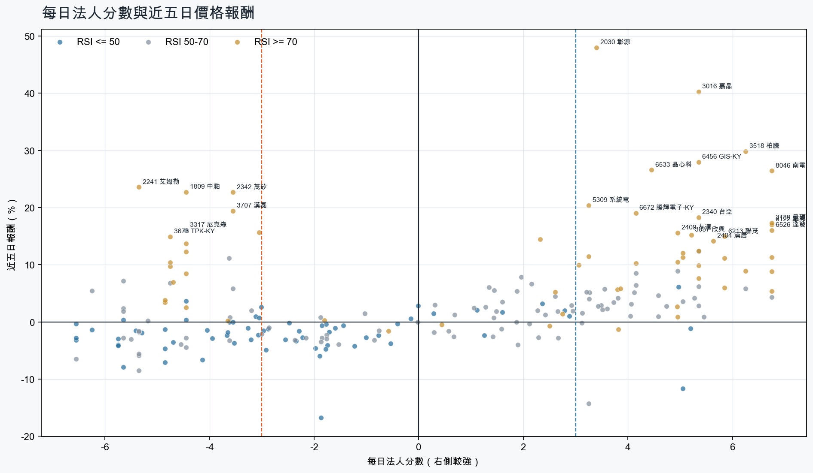
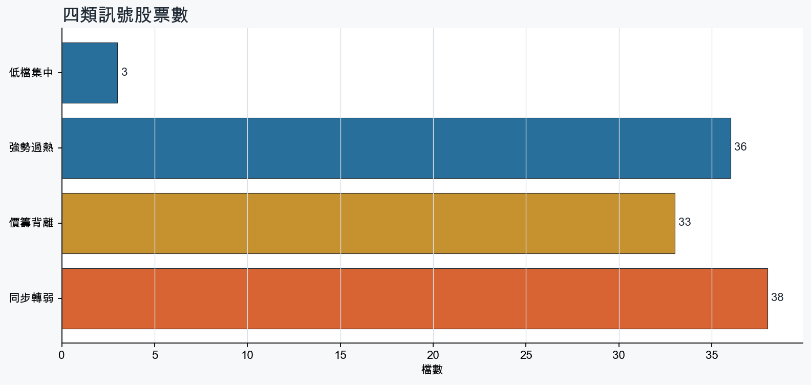
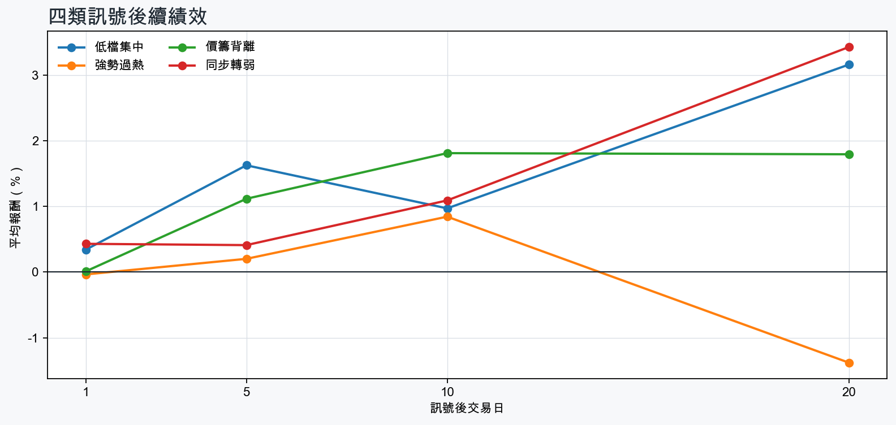

市場情緒偏多
近5日法人合計+624,807 張
篩選池上漲比例58.6%
籌碼好 / RSI低3 檔
籌碼差 / 價跌15 檔



EPS × PE VALUATION
法人常用的相對估值
顯示保守、基準與樂觀估值帶，不把單一數字包裝成精準目標價。
最新累計 EPS 依季數年化 × 同產業有效 P/E 的 Q25／中位數／Q75。排除本公司、非正 P/E，並以 1.5×IQR 排除離群值。估值帶是公開資料篩選值，不是法人目標價；未使用分析師預估 EPS。
MOOD × MONEY
情緒與籌碼雷達
熱度代表被討論程度；情緒分與法人方向分開計算。熱門不等於適合追價，樣本不足也不硬判多空。
| 股票 | 情緒 | 討論熱度 | 情緒 × 籌碼 | 情緒 × 基本面 |
|---|---|---|---|---|
| 2368 金像電價籌背離 | 情緒高漲 +52.3信心 85 | 1001 篇 / 72 留言 / 3 則新聞 | 熱門但法人撤退法人分 -5.7 | 基本面與情緒共振基本面分 +3.6 |
| 2498 宏達電價籌背離 | 情緒高漲 +75.7信心 76 | 1001 篇 / 70 留言 / 3 則新聞 | 熱門但法人撤退法人分 -4.7 | 情緒領先基本面基本面分 -2.8 |
| 6488 環球晶價籌背離 | 情緒高漲 +73.7信心 74 | 901 篇 / 40 留言 / 3 則新聞 | 熱門但法人撤退法人分 -3.6 | 基本面與情緒共振基本面分 +1.1 |
| 8210 勤誠同步轉弱 | 中性分歧 +0.0信心 30 | 510 篇 / 0 留言 / 3 則新聞 | 情籌混合法人分 -4.8 | 基本面與情緒分歧基本面分 +3.6 |
| 4979 華星光同步轉弱 | 中性分歧 +0.0信心 30 | 510 篇 / 0 留言 / 3 則新聞 | 情籌混合法人分 -5.7 | 基本面與情緒分歧基本面分 +3.6 |
| 3450 聯鈞同步轉弱 | 偏多 +29.7信心 30 | 510 篇 / 0 留言 / 3 則新聞 | 熱門但法人撤退法人分 -5.8 | 基本面與情緒共振基本面分 +3.6 |
| 6147 頎邦同步轉弱 | 中性分歧 +0.0信心 30 | 510 篇 / 0 留言 / 3 則新聞 | 情籌混合法人分 -6.5 | 基本面與情緒分歧基本面分 +3.6 |
| 3260 威剛同步轉弱 | 偏多 +29.7信心 30 | 510 篇 / 0 留言 / 3 則新聞 | 熱門但法人撤退法人分 -5.8 | 基本面與情緒共振基本面分 +3.6 |
| 6669 緯穎同步轉弱 | 中性分歧 +0.0信心 30 | 510 篇 / 0 留言 / 3 則新聞 | 情籌混合法人分 -6.5 | 基本面與情緒分歧基本面分 +3.0 |
| 2241 艾姆勒價籌背離 | 偏多 +29.7信心 30 | 510 篇 / 0 留言 / 3 則新聞 | 熱門但法人撤退法人分 -5.3 | 基本面與情緒分歧基本面分 -0.2 |
| 1809 中釉價籌背離 | 中性分歧 +0.0信心 30 | 510 篇 / 0 留言 / 3 則新聞 | 情籌混合法人分 -4.5 | 基本面與情緒分歧基本面分 +0.4 |
| 2342 茂矽價籌背離 | 偏空 -29.7信心 30 | 510 篇 / 0 留言 / 3 則新聞 | 情籌雙弱法人分 -3.5 | 基本面與情緒雙弱基本面分 -2.1 |
01
籌碼好 / RSI低
優先研究基本面；法人續買且價格止穩時，才適合分批觀察。
| 股票 / 確認狀態 | 每日法人分 | 浦男式近似 | 法人加速度 | RSI / 相對強弱 | 量價確認 | 融資融券 | 每週集保確認 | 基本面 | EPS × 同業 P/E 估值 | 情緒 / 情籌 | 近期消息 | 論壇討論 |
|---|---|---|---|---|---|---|---|---|---|---|---|---|
| 5608 四維航等待確認 · 73 分籌碼有訊號，但價格尚未確認 | +5.2法人 +2,870 張 / 5 天 | 接近 · 64站上月線；中期均線偏多；法人籌碼偏多；留意法人買盤未加速、明顯弱於大盤 | -1,744 張近3日 +1,140 / 連續 +10 日 | 44.4相對大盤 -3.9% | 量比 0.38確認分 -1.8近20日弱於大盤；成交量不足；法人買盤減速 | -%融資 - 張 / 融券 - 張 | +1.16 pp1000張 +2.70 pp | 單月營收年增 +39.1%；累計營收年增 +13.9%；2026 Q2 累計 EPS 0.32仍需觀察下一期財報延續性來源：公開資訊觀測站 | 不適用年化 EPS 與交易所近四季 EPS 差異過大，可能有股本調整或一次性損益 | 樣本不足 +0.0熱度 0 / 信心 0情緒樣本不足 | 近期沒有通過股票語境篩選的新聞 | 近期沒有明確提及本股的論壇樣本 |
| 2351 順德等待確認 · 66 分籌碼有訊號，但價格尚未確認 | +5.0法人 +2,563 張 / 4 天 | 接近 · 64中期均線偏多；法人籌碼偏多；買超具延續性；留意未站月線、法人買盤未加速 | -675 張近3日 +818 / 連續 -1 日 | 40.7相對大盤 -14.0% | 量比 1.07確認分 -3.5收盤跌破20日線；近20日弱於大盤；法人買盤減速 | -%融資 - 張 / 融券 - 張 | +1.90 pp1000張 +2.65 pp | 單月營收年增 +61.2%；累計營收年增 +32.5%；2026 Q2 累計 EPS 2.82仍需觀察下一期財報延續性來源：公開資訊觀測站 | 基準 NT$ 156.5估值帶 102.4–282.0現價 209.0 · 估值帶內 · 距基準 -25.1%2026 Q2 累計 EPS 2.82 → 年化 5.64半導體同業 P/E 18.16／27.75／50.00 · n=149 · 信心中等以 Q2 累計 EPS 年化，不等同分析師全年預估來源：TWSE／TPEx 每日本益比 | 樣本不足 +0.0熱度 31 / 信心 10情緒樣本不足 | 【順德法說會重點內容備忘錄】未來展望趨勢 20260825富果直送 · 08/25 | 近期沒有明確提及本股的論壇樣本 |
| 6547 高端疫苗等待確認 · 69 分先等基本面止穩 | +5.0法人 +3,133 張 / 4 天 | 接近 · 58站上月線；中期均線偏多；法人籌碼偏多；留意法人買盤未加速、明顯弱於大盤 | -80 張近3日 +1,518 / 連續 +2 日 | 46.7相對大盤 -6.3% | 量比 0.80確認分 -0.1近20日弱於大盤；法人買盤減速 | -0.1%融資 -9 張 / 融券 -31 張 | +0.11 pp1000張 -0.92 pp | 單月營收年增 +416.9%；累計營收年增 +39.4%2026 Q2 累計 EPS -0.02；2026 Q2 累計營益率 -4.8%來源：公開資訊觀測站 | 不適用年化 EPS 非正數，不適合使用本益比估值 | 樣本不足 +9.9熱度 31 / 信心 10情緒樣本不足 | 《9/29日法人買超》外資買超前三名：鑽石投資(1155張)、高端疫苗(740張)、國光生(450張)genetinfo.com · 09/30 | 近期沒有明確提及本股的論壇樣本 |
02
籌碼好 / RSI高
趨勢強但不追價，等待量縮、RSI降溫或回測支撐。
| 股票 / 確認狀態 | 每日法人分 | 浦男式近似 | 法人加速度 | RSI / 相對強弱 | 量價確認 | 融資融券 | 每週集保確認 | 基本面 | EPS × 同業 P/E 估值 | 情緒 / 情籌 | 近期消息 | 論壇討論 |
|---|---|---|---|---|---|---|---|---|---|---|---|---|
| 8150 南茂等待拉回 · 100 分等拉回，不追價 | +5.8法人 +35,664 張 / 4 天 | 命中 · 89站上月線；中期均線偏多；法人籌碼偏多；留意法人買盤未加速、動能位置非最佳 | -19,953 張近3日 +15,486 / 連續 +1 日 | 72.3相對大盤 +24.6% | 量比 1.93確認分 +2.5法人買盤減速 | -%融資 - 張 / 融券 - 張 | +7.51 pp1000張 +7.44 pp | 單月營收年增 +33.3%；累計營收年增 +30.0%；2026 Q2 累計 EPS 2.00仍需觀察下一期財報延續性來源：公開資訊觀測站 | 基準 NT$ 111.0估值帶 72.64–201.0現價 114.5 · 估值帶內 · 距基準 -3.1%2026 Q2 累計 EPS 2.00 → 年化 4.00半導體同業 P/E 18.16／27.75／50.24 · n=149 · 信心中等以 Q2 累計 EPS 年化，不等同分析師全年預估來源：TWSE／TPEx 每日本益比 | 中性分歧 +0.0熱度 51 / 信心 30情籌混合 | 歐系外資調升南茂目標 SiPh 光學凸塊業務有望貢獻明年營收經濟日報 · 09/28封測同步走強！南茂炸量7.8萬張帶「這檔」齊飆漲停 矽格一度亮燈、穎崴衝破4%Yahoo股市 · 09/30 | 近期沒有明確提及本股的論壇樣本 |
| 3605 宏致等待拉回 · 100 分等拉回，不追價 | +5.0法人 +2,566 張 / 3 天 | 命中 · 91站上月線；中期均線偏多；法人籌碼偏多；留意量能尚未確認、動能位置非最佳 | +1,077 張近3日 +418 / 連續 +1 日 | 76.9相對大盤 +18.7% | 量比 0.88確認分 +5.8價格、量能與籌碼未見明顯弱項 | -%融資 - 張 / 融券 - 張 | +5.42 pp1000張 +2.90 pp | 單月營收年增 +17.2%；累計營收年增 +17.2%；2026 Q2 累計 EPS 1.892026 Q2 累計營益率 6.4%來源：公開資訊觀測站 | 基準 NT$ 100.4估值帶 67.85–167.8現價 170.5 · 高於估值帶 · 距基準 -41.1%2026 Q2 累計 EPS 1.89 → 年化 3.78電子零組件同業 P/E 17.95／26.57／44.40 · n=150 · 信心中等以 Q2 累計 EPS 年化，不等同分析師全年預估來源：TWSE／TPEx 每日本益比 | 樣本不足 +0.0熱度 0 / 信心 0情緒樣本不足 | 近期沒有通過股票語境篩選的新聞 | 近期沒有明確提及本股的論壇樣本 |
| 3105 穩懋等待拉回 · 100 分等拉回，不追價 | +5.0法人 +18,234 張 / 3 天 | 命中 · 96站上月線；中期均線偏多；法人籌碼偏多；留意動能位置非最佳 | +14,898 張近3日 +15,442 / 連續 +1 日 | 74.9相對大盤 +17.2% | 量比 1.46確認分 +6.5價格、量能與籌碼未見明顯弱項 | +0.6%融資 +272 張 / 融券 -169 張 | +2.18 pp1000張 +2.44 pp | 單月營收年增 +30.6%；累計營收年增 +33.0%；2026 Q2 累計 EPS 3.56仍需觀察下一期財報延續性來源：公開資訊觀測站 | 基準 NT$ 196.9估值帶 129.3–355.2現價 542.0 · 高於估值帶 · 距基準 -63.7%2026 Q2 累計 EPS 3.56 → 年化 7.12半導體同業 P/E 18.16／27.66／49.89 · n=148 · 信心中等以 Q2 累計 EPS 年化，不等同分析師全年預估來源：TWSE／TPEx 每日本益比 | 偏多 +29.7熱度 51 / 信心 30情籌共振 | 〈焦點股〉受惠星鏈衛星題材、光通訊產品量產 穩懋衝上漲停news.cnyes.com · 09/303105 穩懋- 9/30 3105 +17327 - 股市爆料同學會CMoney · 09/30 | 近期沒有明確提及本股的論壇樣本 |
| 3293 鈊象等待拉回 · 100 分等拉回，不追價 | +6.8法人 +6,366 張 / 5 天 | 接近 · 80站上月線；法人籌碼偏多；法人買盤加速；留意中期均線未翻多、RSI過熱 | +4,683 張近3日 +5,518 / 連續 +5 日 | 81.7相對大盤 +4.0% | 量比 1.11確認分 +5.520日線低於60日線 | +0.0%融資 +0 張 / 融券 +3 張 | +1.13 pp1000張 +0.82 pp | 單月營收年增 +24.8%；累計營收年增 +18.1%；2026 Q2 累計 EPS 22.77仍需觀察下一期財報延續性來源：公開資訊觀測站 | 基準 NT$ 647.1估值帶 504.6–1,370現價 788.0 · 估值帶內 · 距基準 -17.9%2026 Q2 累計 EPS 22.77 → 年化 45.54文化創意同業 P/E 11.08／14.21／30.09 · n=14 · 信心中等以 Q2 累計 EPS 年化，不等同分析師全年預估來源：TWSE／TPEx 每日本益比 | 中性分歧 +0.0熱度 51 / 信心 30情籌混合 | 3293 鈊象- 最新的法說會與產業數據，基本面、籌碼面與技術面的全面解析- 股市爆料同學會CMoney · 09/283293 鈊象- 鈊象本公司網路資安事件說明- 股市爆料同學會CMoney · 09/29 | 近期沒有明確提及本股的論壇樣本 |
| 5483 中美晶等待拉回 · 100 分等拉回，不追價 | +5.0法人 +8,357 張 / 4 天 | 接近 · 86站上月線；法人籌碼偏多；法人買盤加速；留意中期均線未翻多、動能位置非最佳 | +28,394 張近3日 +18,059 / 連續 +3 日 | 71.3相對大盤 +12.7% | 量比 2.41確認分 +7.120日線低於60日線 | -2.5%融資 -420 張 / 融券 +6 張 | +0.69 pp1000張 +1.16 pp | 單月營收年增 +11.7%；累計營收年增 +6.1%；2026 Q2 累計 EPS 5.02仍需觀察下一期財報延續性來源：公開資訊觀測站 | 基準 NT$ 280.8估值帶 182.3–504.4現價 207.5 · 估值帶內 · 距基準 +35.3%2026 Q2 累計 EPS 5.02 → 年化 10.04半導體同業 P/E 18.16／27.97／50.24 · n=149 · 信心中等以 Q2 累計 EPS 年化，不等同分析師全年預估來源：TWSE／TPEx 每日本益比 | 偏多 +29.7熱度 51 / 信心 30情籌共振 | 9／30台股雷達｜資金進駐群創、中美晶放量上漲原因曝- 證券工商時報 · 09/30《兩邊一起點火！環球晶、中美晶 雙雙漲停 借券還在高檔 🚀》CMoney · 09/30 | 近期沒有明確提及本股的論壇樣本 |
| 2404 漢唐等待拉回 · 97 分等拉回，不追價 | +5.6法人 +1,800 張 / 4 天 | 接近 · 79站上月線；法人籌碼偏多；買超具延續性；留意中期均線未翻多、法人買盤未加速 | -1,886 張近3日 -120 / 連續 +1 日 | 73.7相對大盤 +17.8% | 量比 2.03確認分 +2.520日線低於60日線；法人買盤減速 | -%融資 - 張 / 融券 - 張 | +2.04 pp1000張 +1.09 pp | 單月營收年增 +59.1%；累計營收年增 +71.6%；2026 Q2 累計 EPS 36.23仍需觀察下一期財報延續性來源：公開資訊觀測站 | 基準 NT$ 1,634估值帶 1,124–2,870現價 1,290 · 估值帶內 · 距基準 +26.7%2026 Q2 累計 EPS 36.23 → 年化 72.46其他電子同業 P/E 15.51／22.55／39.61 · n=69 · 信心中等以 Q2 累計 EPS 年化，不等同分析師全年預估來源：TWSE／TPEx 每日本益比 | 中性分歧 +0.0熱度 44 / 信心 20情籌混合 | 【12:41 即時新聞】漢唐(2404)股價走強，市場聚焦半導體建廠動能CMoney投資網誌 · 09/3016檔法人認錯回補悍 台達電、漢唐等有望扮行情領航員 | 市場焦點 | 證券經濟日報 · 09/27 | 近期沒有明確提及本股的論壇樣本 |
| 6672 騰輝電子-KY等待拉回 · 100 分等拉回，不追價 | +4.2法人 +2,285 張 / 3 天 | 命中 · 96站上月線；中期均線偏多；法人籌碼偏多；留意動能位置非最佳 | +1,797 張近3日 +2,719 / 連續 +1 日 | 77.2相對大盤 +30.2% | 量比 1.38確認分 +6.5價格、量能與籌碼未見明顯弱項 | -%融資 - 張 / 融券 - 張 | +2.52 pp1000張 -0.45 pp | 單月營收年增 +133.2%；累計營收年增 +53.6%；2026 Q2 累計 EPS 4.75仍需觀察下一期財報延續性來源：公開資訊觀測站 | 基準 NT$ 252.4估值帶 170.5–421.8現價 369.0 · 估值帶內 · 距基準 -31.6%2026 Q2 累計 EPS 4.75 → 年化 9.50電子零組件同業 P/E 17.95／26.57／44.40 · n=150 · 信心中等以 Q2 累計 EPS 年化，不等同分析師全年預估來源：TWSE／TPEx 每日本益比 | 偏多 +29.7熱度 51 / 信心 30情籌共振 | 台股站穩48K！低軌衛星強勢升空「這檔面板股」手握封裝多題材噴出大眾控、騰輝電子-KY也亮燈ftnn.com.tw · 09/30【09:24 即時新聞】騰輝電子-KY(6672)亮燈漲停，高階CCL擴產題材受關注CMoney投資網誌 · 09/30 | 近期沒有明確提及本股的論壇樣本 |
| 6278 台表科等待拉回 · 100 分等拉回，不追價 | +5.0法人 +3,357 張 / 4 天 | 命中 · 96站上月線；中期均線偏多；法人籌碼偏多；留意動能位置非最佳 | +294 張近3日 +1,485 / 連續 +3 日 | 71.9相對大盤 +5.3% | 量比 1.77確認分 +5.1價格、量能與籌碼未見明顯弱項 | -%融資 - 張 / 融券 - 張 | +1.58 pp1000張 +2.31 pp | 單月營收年增 +10.9%；累計營收年增 +5.2%；2026 Q2 累計 EPS 4.932026 Q2 累計營益率 6.0%來源：公開資訊觀測站 | 基準 NT$ 240.4估值帶 129.8–377.9現價 218.0 · 估值帶內 · 距基準 +10.3%2026 Q2 累計 EPS 4.93 → 年化 9.86光電同業 P/E 13.16／24.38／38.33 · n=69 · 信心中等以 Q2 累計 EPS 年化，不等同分析師全年預估來源：TWSE／TPEx 每日本益比 | 樣本不足 +0.0熱度 0 / 信心 0情緒樣本不足 | 近期沒有通過股票語境篩選的新聞 | 近期沒有明確提及本股的論壇樣本 |
| 6526 達發等待拉回 · 98 分等拉回，不追價 | +6.8法人 +3,812 張 / 5 天 | 接近 · 78站上月線；中期均線偏多；法人籌碼偏多；留意法人買盤未加速、量能尚未確認 | -2,252 張近3日 +1,264 / 連續 +8 日 | 82.7相對大盤 +34.5% | 量比 0.67確認分 +1.8法人買盤減速 | -%融資 - 張 / 融券 - 張 | +2.45 pp1000張 +0.44 pp | 單月營收年增 +26.1%；累計營收年增 +12.5%；2026 Q2 累計 EPS 9.72仍需觀察下一期財報延續性來源：公開資訊觀測站 | 基準 NT$ 539.5估值帶 353.0–976.7現價 840.0 · 估值帶內 · 距基準 -35.8%2026 Q2 累計 EPS 9.72 → 年化 19.44半導體同業 P/E 18.16／27.75／50.24 · n=149 · 信心中等以 Q2 累計 EPS 年化，不等同分析師全年預估來源：TWSE／TPEx 每日本益比 | 中性分歧 +0.0熱度 51 / 信心 30情籌混合 | 達發、安葆短線漲勢過猛 今起遭處置分盤交易至10月6日BigGo 財經 · 09/30焦點股》達發：光通訊業務大爆發！ 明年營收規模大增逾3倍自由財經 · 09/18 | 近期沒有明確提及本股的論壇樣本 |
| 6122 擎邦等待拉回 · 100 分等拉回，不追價 | +6.8法人 +2,041 張 / 5 天 | 接近 · 85站上月線；中期均線偏多；法人籌碼偏多；留意量能尚未確認、RSI過熱 | +1,310 張近3日 +1,741 / 連續 +10 日 | 94.6相對大盤 +22.1% | 量比 2.81確認分 +5.8價格、量能與籌碼未見明顯弱項 | +2.8%融資 +41 張 / 融券 +3 張 | +4.59 pp1000張 +0.91 pp | 單月營收年增 +13.6%；2026 Q2 累計 EPS 2.19；2026 Q2 累計營益率 10.9%累計營收年增 -0.2%來源：公開資訊觀測站 | 基準 NT$ 90.18估值帶 61.14–141.4現價 60.50 · 低於估值帶 · 距基準 +49.1%2026 Q2 累計 EPS 2.19 → 年化 4.38電機機械同業 P/E 13.96／20.59／32.29 · n=71 · 信心中等以 Q2 累計 EPS 年化，不等同分析師全年預估來源：TWSE／TPEx 每日本益比 | 樣本不足 +0.0熱度 0 / 信心 0情緒樣本不足 | 近期沒有通過股票語境篩選的新聞 | 近期沒有明確提及本股的論壇樣本 |
| 3016 嘉晶等待拉回 · 100 分等拉回，不追價 | +5.3法人 +20,512 張 / 4 天 | 接近 · 83站上月線；中期均線偏多；法人籌碼偏多；留意法人買盤未加速、RSI過熱 | -7,152 張近3日 +8,024 / 連續 -1 日 | 90.4相對大盤 +60.1% | 量比 2.09確認分 +2.5法人買盤減速 | -%融資 - 張 / 融券 - 張 | +4.65 pp1000張 +4.44 pp | 單月營收年增 +57.8%；累計營收年增 +34.7%；2026 Q2 累計 EPS 1.00仍需觀察下一期財報延續性來源：公開資訊觀測站 | 基準 NT$ 55.50估值帶 36.32–100.0現價 169.0 · 高於估值帶 · 距基準 -67.2%2026 Q2 累計 EPS 1.00 → 年化 2.00半導體同業 P/E 18.16／27.75／50.00 · n=149 · 信心中等以 Q2 累計 EPS 年化，不等同分析師全年預估來源：TWSE／TPEx 每日本益比 | 偏多 +29.7熱度 51 / 信心 30情籌共振 | 3檔飆股「抓去關」新名單 嘉晶明起處置到10／12ETtoday財經雲 · 09/30最狂不是健策！「這檔」90天暴漲290%、嘉晶6天狂噴41% 20檔注意股一次看Yahoo股市 · 09/30 | 近期沒有明確提及本股的論壇樣本 |
| 1560 中砂等待拉回 · 94 分等拉回，不追價 | +6.8法人 +2,143 張 / 5 天 | 接近 · 73站上月線；中期均線偏多；法人籌碼偏多；留意法人買盤未加速、量能異常 | -1,328 張近3日 +877 / 連續 +6 日 | 81.9相對大盤 +37.1% | 量比 0.62確認分 +1.1成交量不足；法人買盤減速 | -%融資 - 張 / 融券 - 張 | +1.53 pp1000張 +0.79 pp | 單月營收年增 +30.4%；累計營收年增 +24.5%；2026 Q2 累計 EPS 6.44仍需觀察下一期財報延續性來源：公開資訊觀測站 | 基準 NT$ 264.2估值帶 178.8–396.7現價 963.0 · 高於估值帶 · 距基準 -72.6%2026 Q2 累計 EPS 6.44 → 年化 12.88電機機械同業 P/E 13.88／20.51／30.80 · n=71 · 信心中等以 Q2 累計 EPS 年化，不等同分析師全年預估來源：TWSE／TPEx 每日本益比 | 偏多 +29.7熱度 51 / 信心 30情籌共振 | 1560 中砂- 本土金控系上修中砂至1100｜今日4份研報- 股市爆料同學會CMoney · 09/30台積電法說前先卡位？中砂先漲、昇陽半、台特化逆勢強分析師揭資金輪動路線- 上市櫃旺得富理財網 · 09/29 | 近期沒有明確提及本股的論壇樣本 |
| 8050 廣積等待拉回 · 100 分等拉回，不追價 | +5.3法人 +2,598 張 / 4 天 | 接近 · 70站上月線；法人籌碼偏多；法人買盤加速；留意中期均線未翻多、量能異常 | +1,498 張近3日 +2,200 / 連續 -1 日 | 79.0相對大盤 +9.4% | 量比 4.02確認分 +4.820日線低於60日線；融資單日增幅偏高 | +6.2%融資 +240 張 / 融券 +5 張 | +0.93 pp1000張 +0.40 pp | 單月營收年增 +94.5%；累計營收年增 +17.6%；2026 Q2 累計 EPS 2.692026 Q2 累計營益率 5.8%來源：公開資訊觀測站 | 基準 NT$ 89.42估值帶 67.36–132.1現價 63.60 · 低於估值帶 · 距基準 +40.6%2026 Q2 累計 EPS 2.69 → 年化 5.38電腦及週邊同業 P/E 12.52／16.62／24.56 · n=78 · 信心較低以 Q2 累計 EPS 年化，不等同分析師全年預估；年化 EPS 為交易所近四季 EPS 的 2.05 倍，需保守解讀來源：TWSE／TPEx 每日本益比 | 樣本不足 +9.9熱度 31 / 信心 10情緒樣本不足 | 【10:58 即時新聞】廣積(8050)股價走強，工業電腦訂單動能受關注CMoney投資網誌 · 09/29 | 近期沒有明確提及本股的論壇樣本 |
| 4566 時碩工業等待拉回 · 100 分等拉回，不追價 | +5.3法人 +3,768 張 / 4 天 | 接近 · 80站上月線；法人籌碼偏多；法人買盤加速；留意中期均線未翻多、RSI過熱 | +2,887 張近3日 +3,373 / 連續 +4 日 | 78.5相對大盤 +10.2% | 量比 2.17確認分 +6.520日線低於60日線 | -%融資 - 張 / 融券 - 張 | -0.78 pp1000張 -1.32 pp | 單月營收年增 +53.9%；累計營收年增 +20.5%；2026 Q2 累計 EPS 0.992026 Q2 累計營益率 4.3%來源：公開資訊觀測站 | 基準 NT$ 40.61估值帶 27.48–63.93現價 74.10 · 高於估值帶 · 距基準 -45.2%2026 Q2 累計 EPS 0.99 → 年化 1.98電機機械同業 P/E 13.88／20.51／32.29 · n=71 · 信心中等以 Q2 累計 EPS 年化，不等同分析師全年預估來源：TWSE／TPEx 每日本益比 | 樣本不足 +0.0熱度 0 / 信心 0情緒樣本不足 | 近期沒有通過股票語境篩選的新聞 | 近期沒有明確提及本股的論壇樣本 |
| 3189 景碩等待拉回 · 98 分等拉回，不追價 | +6.8法人 +20,908 張 / 5 天 | 接近 · 83站上月線；中期均線偏多；法人籌碼偏多；留意法人買盤未加速、RSI過熱 | -3,390 張近3日 +8,371 / 連續 +5 日 | 78.9相對大盤 +14.5% | 量比 1.14確認分 +2.5法人買盤減速 | -%融資 - 張 / 融券 - 張 | +0.01 pp1000張 -0.58 pp | 單月營收年增 +40.6%；累計營收年增 +32.1%；2026 Q2 累計 EPS 3.74仍需觀察下一期財報延續性來源：公開資訊觀測站 | 基準 NT$ 207.6估值帶 135.8–374.0現價 970.0 · 高於估值帶 · 距基準 -78.6%2026 Q2 累計 EPS 3.74 → 年化 7.48半導體同業 P/E 18.16／27.75／50.00 · n=149 · 信心中等以 Q2 累計 EPS 年化，不等同分析師全年預估來源：TWSE／TPEx 每日本益比 | 偏多 +29.7熱度 51 / 信心 30情籌共振 | 欣興、南電、景碩…ABF三雄誰能搶下過半市占？金控法人估它EPS連3年翻倍喊出天價輾壓外資圈- 上市櫃旺得富理財網 · 09/29PCB紅通通！「這檔」寫新天價攜台虹等3檔漲停 南電大漲5%、景碩也創高ftnn.com.tw · 09/30 | 近期沒有明確提及本股的論壇樣本 |
03
籌碼差 / 股價上漲
可能是事件行情或軋空；沒有籌碼改善前避免追高。
| 股票 / 確認狀態 | 每日法人分 | 浦男式近似 | 法人加速度 | RSI / 相對強弱 | 量價確認 | 融資融券 | 每週集保確認 | 基本面 | EPS × 同業 P/E 估值 | 情緒 / 情籌 | 近期消息 | 論壇討論 |
|---|---|---|---|---|---|---|---|---|---|---|---|---|
| 2241 艾姆勒風險警示 · 52 分背離警戒，避免追高 | -5.3法人 -1,763 張 / 1 天 | 未命中 · 47站上月線；中期均線偏多；法人買盤加速；留意法人籌碼偏弱、買超延續不足 | +1,330 張近3日 -323 / 連續 +1 日 | 90.0相對大盤 +29.4% | 量比 4.71確認分 +5.3價格、量能與籌碼未見明顯弱項 | -%融資 - 張 / 融券 - 張 | -1.01 pp1000張 -1.88 pp | 單月營收年增 +47.3%；累計營收年增 +46.5%2026 Q2 累計 EPS -0.42；2026 Q2 累計營益率 -8.3%來源：公開資訊觀測站 | 不適用年化 EPS 非正數，不適合使用本益比估值 | 偏多 +29.7熱度 51 / 信心 30熱門但法人撤退 | 焦點股》艾姆勒：拿下北美ADAS訂單 股價強漲6天自由財經 · 09/30【11:21 即時新聞】艾姆勒(2241)股價走強，市場持續聚焦車電散熱動能CMoney投資網誌 · 09/30 | 近期沒有明確提及本股的論壇樣本 |
| 1809 中釉風險警示 · 42 分背離警戒，避免追高 | -4.5法人 -2,791 張 / 2 天 | 未命中 · 37站上月線；明顯強於大盤；流動性足夠；留意中期均線未翻多、法人籌碼偏弱 | -2,709 張近3日 -2,392 / 連續 -2 日 | 79.6相對大盤 +18.8% | 量比 4.67確認分 +1.420日線低於60日線；法人買盤減速 | -%融資 - 張 / 融券 - 張 | +0.75 pp1000張 +0.51 pp | 2026 Q2 累計 EPS 0.10單月營收年增 -4.1%；累計營收年增 -1.8%；2026 Q2 累計營益率 1.0%來源：公開資訊觀測站 | 不適用同產業有效 P/E 樣本不足（4 檔） | 中性分歧 +0.0熱度 51 / 信心 30情籌混合 | 【12:38 即時新聞】中釉(1809)股價走強，螢光玻璃片需求回溫成盤中焦點CMoney投資網誌 · 09/30【中釉法說會重點內容備忘錄】未來展望趨勢 20260623富果直送 · 06/23 | 近期沒有明確提及本股的論壇樣本 |
| 2342 茂矽風險警示 · 48 分背離警戒，避免追高 | -3.5法人 -4,966 張 / 3 天 | 未命中 · 55站上月線；中期均線偏多；買超具延續性；留意法人籌碼偏弱、法人買盤未加速 | -7,571 張近3日 -6,233 / 連續 +1 日 | 79.9相對大盤 +21.4% | 量比 2.06確認分 +2.5法人買盤減速 | -%融資 - 張 / 融券 - 張 | +3.79 pp1000張 +1.90 pp | 單月營收年增 +4.0%累計營收年增 -3.1%；2026 Q2 累計 EPS -0.23；2026 Q2 累計營益率 -4.7%來源：公開資訊觀測站 | 不適用年化 EPS 非正數，不適合使用本益比估值 | 偏空 -29.7熱度 51 / 信心 30情籌雙弱 | 《台北股市》注意股：30日33檔健策.金居.嘉晶.茂矽.高力.茂迪等- 上市櫃旺得富理財網 · 09/30【12:44 即時新聞】茂矽(2342)股價穩步走強，短線技術與籌碼成盤中焦點CMoney投資網誌 · 09/29 | 近期沒有明確提及本股的論壇樣本 |
| 3707 漢磊風險警示 · 63 分背離警戒，避免追高 | -3.5法人 -5,582 張 / 3 天 | 未命中 · 47站上月線；法人買盤加速；買超具延續性；留意中期均線未翻多、法人籌碼偏弱 | +7,782 張近3日 +1,370 / 連續 +1 日 | 80.5相對大盤 +17.2% | 量比 2.81確認分 +5.820日線低於60日線 | +1.0%融資 +146 張 / 融券 +33 張 | +0.09 pp1000張 -0.68 pp | 單月營收年增 +29.5%；累計營收年增 +26.4%2026 Q2 累計 EPS -0.57；2026 Q2 累計營益率 -2.2%來源：公開資訊觀測站 | 不適用年化 EPS 非正數，不適合使用本益比估值 | 中性分歧 +0.0熱度 51 / 信心 30情籌混合 | 3707 漢磊- 漢磊看旺2026年下半年營運- 股市爆料同學會CMoney · 09/303707 漢磊- 499嘎空吧🚀 - 股市爆料同學會CMoney · 09/30 | 近期沒有明確提及本股的論壇樣本 |
| 3317 尼克森風險警示 · 47 分背離警戒，避免追高 | -4.5法人 -2,500 張 / 2 天 | 未命中 · 57站上月線；法人買盤加速；量價健康；留意中期均線未翻多、法人籌碼偏弱 | +343 張近3日 -1,052 / 連續 -2 日 | 68.4相對大盤 -0.4% | 量比 1.03確認分 +2.320日線低於60日線；融資單日增幅偏高 | +6.8%融資 +321 張 / 融券 -3 張 | +0.17 pp1000張 -0.09 pp | 累計營收年增 +3.4%；2026 Q2 累計 EPS 1.56；2026 Q2 累計營益率 12.8%單月營收年增 -27.6%來源：公開資訊觀測站 | 基準 NT$ 86.58估值帶 56.66–156.8現價 65.20 · 估值帶內 · 距基準 +32.8%2026 Q2 累計 EPS 1.56 → 年化 3.12半導體同業 P/E 18.16／27.75／50.24 · n=149 · 信心中等以 Q2 累計 EPS 年化，不等同分析師全年預估來源：TWSE／TPEx 每日本益比 | 樣本不足 +0.0熱度 0 / 信心 0情緒樣本不足 | 近期沒有通過股票語境篩選的新聞 | 近期沒有明確提及本股的論壇樣本 |
| 3673 TPK-KY風險警示 · 42 分背離警戒，避免追高 | -4.8法人 -4,442 張 / 2 天 | 未命中 · 57站上月線；中期均線偏多；明顯強於大盤；留意法人籌碼偏弱、法人買盤未加速 | -3,549 張近3日 -4,082 / 連續 -2 日 | 75.7相對大盤 +6.8% | 量比 6.71確認分 +1.0法人買盤減速 | -%融資 - 張 / 融券 - 張 | -0.05 pp1000張 +0.46 pp | 單月營收年增 +16.1%；累計營收年增 +15.3%；2026 Q2 累計 EPS 3.332026 Q2 累計營益率 -1.4%來源：公開資訊觀測站 | 基準 NT$ 162.4估值帶 87.65–255.3現價 75.50 · 低於估值帶 · 距基準 +115.1%2026 Q2 累計 EPS 3.33 → 年化 6.66光電同業 P/E 13.16／24.38／38.33 · n=69 · 信心中等以 Q2 累計 EPS 年化，不等同分析師全年預估來源：TWSE／TPEx 每日本益比 | 中性分歧 +0.0熱度 51 / 信心 30情籌混合 | 〈焦點股〉輝達傳攜手台鏈衝刺玻璃基板 TPK-KY攻漲停news.cnyes.com · 09/303673 TPK-KY - 今天外資賣3788張， 明天先跑吧， 隔壁棚的外資買了575... - 股市爆料同學會CMoney · 09/30 | 近期沒有明確提及本股的論壇樣本 |
| 3149 正達風險警示 · 37 分背離警戒，避免追高 | -4.5法人 -3,214 張 / 2 天 | 未命中 · 36站上月線；明顯強於大盤；流動性足夠；留意中期均線未翻多、法人籌碼偏弱 | -2,509 張近3日 -2,538 / 連續 -1 日 | 77.0相對大盤 +11.5% | 量比 3.19確認分 +1.420日線低於60日線；法人買盤減速 | -%融資 - 張 / 融券 - 張 | -1.36 pp1000張 -0.97 pp | 單月營收年增 +19.3%；累計營收年增 +13.1%2026 Q2 累計 EPS -0.85；2026 Q2 累計營益率 -17.5%來源：公開資訊觀測站 | 不適用年化 EPS 非正數，不適合使用本益比估值 | 中性分歧 +0.0熱度 51 / 信心 30情籌混合 | 【09:21 即時新聞】正達(3149)亮燈漲停，玻璃基板題材成盤中焦點CMoney投資網誌 · 09/30【09/30 產業即時新聞】面板族群強勢表態！正達、安可亮燈漲停，帶動中游零組件全面走揚CMoney投資網誌 · 09/30 | 近期沒有明確提及本股的論壇樣本 |
| 6182 合晶風險警示 · 72 分背離警戒，避免追高 | -3.0法人 -9,029 張 / 3 天 | 接近 · 68站上月線；法人買盤加速；買超具延續性；留意中期均線未翻多、法人籌碼偏弱 | +30,753 張近3日 +7,922 / 連續 +1 日 | 74.0相對大盤 +22.1% | 量比 2.66確認分 +5.220日線低於60日線；融資單日增幅偏高 | +11.7%融資 +7,758 張 / 融券 -58 張 | +0.08 pp1000張 -0.45 pp | 單月營收年增 +20.0%；累計營收年增 +11.7%；2026 Q2 累計 EPS 0.062026 Q2 累計營益率 2.3%來源：公開資訊觀測站 | 基準 NT$ 3.33估值帶 2.18–6.00現價 133.0 · 高於估值帶 · 距基準 -97.5%2026 Q2 累計 EPS 0.06 → 年化 0.12半導體同業 P/E 18.16／27.75／50.00 · n=149 · 信心中等以 Q2 累計 EPS 年化，不等同分析師全年預估來源：TWSE／TPEx 每日本益比 | 偏多 +29.7熱度 51 / 信心 30熱門但法人撤退 | 熱門股／環球晶8月獲利年增145% 漲停站回千元！中美晶、合晶也亮燈| 產經非凡新聞台 · 09/30矽晶圓漲跌各半！「這檔」添太陽能動力衝漲停、環球晶、合晶齊亮燈 合邦重挫逾6%ftnn.com.tw · 09/30 | 近期沒有明確提及本股的論壇樣本 |
| 1709 和益風險警示 · 54 分背離警戒，避免追高 | -4.5法人 -13,112 張 / 2 天 | 接近 · 71站上月線；中期均線偏多；明顯強於大盤；留意法人籌碼偏弱、法人買盤未加速 | -13,548 張近3日 -11,501 / 連續 +2 日 | 71.8相對大盤 +40.8% | 量比 1.66確認分 +2.5法人買盤減速 | -%融資 - 張 / 融券 - 張 | +0.02 pp1000張 +0.55 pp | 單月營收年增 +82.7%；累計營收年增 +22.3%；2026 Q2 累計 EPS 1.30仍需觀察下一期財報延續性來源：公開資訊觀測站 | 基準 NT$ 48.91估值帶 36.01–68.09現價 48.40 · 估值帶內 · 距基準 +1.1%2026 Q2 累計 EPS 1.30 → 年化 2.60化學工業同業 P/E 13.85／18.81／26.19 · n=32 · 信心中等以 Q2 累計 EPS 年化，不等同分析師全年預估來源：TWSE／TPEx 每日本益比 | 樣本不足 +0.0熱度 31 / 信心 10情緒樣本不足 | 【11:11 即時新聞】和益(1709)盤中走強逼近一成漲幅，化工族群續成盤面焦點CMoney投資網誌 · 09/30 | 近期沒有明確提及本股的論壇樣本 |
| 8028 昇陽半導體風險警示 · 68 分背離警戒，避免追高 | -4.8法人 -6,245 張 / 2 天 | 接近 · 68站上月線；法人買盤加速；明顯強於大盤；留意中期均線未翻多、法人籌碼偏弱 | +7,529 張近3日 -1,214 / 連續 -1 日 | 73.0相對大盤 +13.3% | 量比 1.86確認分 +6.520日線低於60日線 | -%融資 - 張 / 融券 - 張 | -1.57 pp1000張 -3.32 pp | 單月營收年增 +25.6%；累計營收年增 +29.1%；2026 Q2 累計 EPS 3.32仍需觀察下一期財報延續性來源：公開資訊觀測站 | 基準 NT$ 184.3估值帶 120.6–332.0現價 282.5 · 估值帶內 · 距基準 -34.8%2026 Q2 累計 EPS 3.32 → 年化 6.64半導體同業 P/E 18.16／27.75／50.00 · n=149 · 信心中等以 Q2 累計 EPS 年化，不等同分析師全年預估來源：TWSE／TPEx 每日本益比 | 中性分歧 +0.0熱度 51 / 信心 30情籌混合 | 8028 昇陽半導體 - 投信籌碼持續增加 量增 - 股市爆料同學會CMoney · 09/30今日最夯股／昇陽半導體量能大增 股價站上所有均線、一度漲停 | 市場焦點 | 證券經濟日報 · 09/29 | 近期沒有明確提及本股的論壇樣本 |
| 4919 新唐風險警示 · 59 分背離警戒，避免追高 | -4.8法人 -8,761 張 / 2 天 | 未命中 · 53站上月線；法人買盤加速；明顯強於大盤；留意中期均線未翻多、法人籌碼偏弱 | +10,341 張近3日 -2,530 / 連續 +1 日 | 74.1相對大盤 +11.5% | 量比 1.56確認分 +6.520日線低於60日線 | -%融資 - 張 / 融券 - 張 | -0.91 pp1000張 -1.04 pp | 單月營收年增 +12.1%；累計營收年增 +1.0%2026 Q2 累計 EPS -0.57；2026 Q2 累計營益率 -2.8%來源：公開資訊觀測站 | 不適用年化 EPS 非正數，不適合使用本益比估值 | 中性分歧 +0.0熱度 44 / 信心 20情籌混合 | 4919 新唐- 關注公司發展與未來展望- 股市爆料同學會CMoney · 09/304919 新唐 - 剛護盤ㄧ張🙃 - 股市爆料同學會CMoney · 09/30 | 近期沒有明確提及本股的論壇樣本 |
| 6488 環球晶風險警示 · 69 分背離警戒，避免追高 | -3.6法人 -3,438 張 / 2 天 | 接近 · 68站上月線；法人買盤加速；明顯強於大盤；留意中期均線未翻多、法人籌碼偏弱 | +5,592 張近3日 +390 / 連續 +1 日 | 62.6相對大盤 +9.6% | 量比 1.87確認分 +6.520日線低於60日線 | +1.1%融資 +171 張 / 融券 -140 張 | -1.52 pp1000張 +0.62 pp | 單月營收年增 +7.6%；2026 Q2 累計 EPS 11.87；2026 Q2 累計營益率 9.9%累計營收年增 -3.1%來源：公開資訊觀測站 | 基準 NT$ 658.8估值帶 431.1–1,187現價 1,035 · 估值帶內 · 距基準 -36.4%2026 Q2 累計 EPS 11.87 → 年化 23.74半導體同業 P/E 18.16／27.75／50.00 · n=149 · 信心中等以 Q2 累計 EPS 年化，不等同分析師全年預估來源：TWSE／TPEx 每日本益比 | 情緒高漲 +73.7熱度 90 / 信心 74熱門但法人撤退 | 《兩邊一起點火！環球晶、中美晶 雙雙漲停 借券還在高檔 🚀》CMoney · 09/30熱門股／環球晶8月獲利年增145% 漲停站回千元！中美晶、合晶也亮燈| 產經非凡新聞台 · 09/30 | [情報] 6488 環球晶 8月自結:1.47 年增:145%PTT Stock · 09-29 · 40 留言 |
| 3645 達邁風險警示 · 43 分背離警戒，避免追高 | -4.8法人 -2,115 張 / 2 天 | 接近 · 63站上月線；中期均線偏多；法人買盤加速；留意法人籌碼偏弱、買超延續不足 | +260 張近3日 -810 / 連續 +2 日 | 54.1相對大盤 -2.9% | 量比 1.83確認分 +3.8價格、量能與籌碼未見明顯弱項 | -%融資 - 張 / 融券 - 張 | -6.14 pp1000張 -9.02 pp | 2026 Q2 累計 EPS 1.52；2026 Q2 累計營益率 21.3%單月營收年增 -11.0%；累計營收年增 -2.7%來源：公開資訊觀測站 | 基準 NT$ 80.77估值帶 54.57–136.1現價 75.30 · 估值帶內 · 距基準 +7.3%2026 Q2 累計 EPS 1.52 → 年化 3.04電子零組件同業 P/E 17.95／26.57／44.78 · n=150 · 信心中等以 Q2 累計 EPS 年化，不等同分析師全年預估來源：TWSE／TPEx 每日本益比 | 樣本不足 +0.0熱度 0 / 信心 0情緒樣本不足 | 近期沒有通過股票語境篩選的新聞 | 近期沒有明確提及本股的論壇樣本 |
| 2368 金像電風險警示 · 29 分背離警戒，避免追高 | -5.7法人 -6,739 張 / 1 天 | 接近 · 60站上月線；中期均線偏多；量價健康；留意法人籌碼偏弱、法人買盤未加速 | -1,757 張近3日 -4,920 / 連續 -3 日 | 54.8相對大盤 -7.8% | 量比 2.22確認分 -1.4近20日弱於大盤；法人買盤減速 | -%融資 - 張 / 融券 - 張 | +0.00 pp1000張 +0.26 pp | 單月營收年增 +76.4%；累計營收年增 +71.2%；2026 Q2 累計 EPS 16.17仍需觀察下一期財報延續性來源：公開資訊觀測站 | 基準 NT$ 859.3估值帶 580.5–1,448現價 1,120 · 估值帶內 · 距基準 -23.3%2026 Q2 累計 EPS 16.17 → 年化 32.34電子零組件同業 P/E 17.95／26.57／44.78 · n=150 · 信心中等以 Q2 累計 EPS 年化，不等同分析師全年預估來源：TWSE／TPEx 每日本益比 | 情緒高漲 +52.3熱度 100 / 信心 85熱門但法人撤退 | 金像電目標價多少？股價10年狂漲9000%，亞馬遜為何砸16億入股數位時代 · 09/30亞馬遜加持金像電 股價黑翻紅目標價曝三立新聞 · 09/30 | [情報] Amazon私募認購2368金像電PTT Stock · 09-29 · 72 留言 |
| 2498 宏達電風險警示 · 48 分背離警戒，避免追高 | -4.7法人 -7,013 張 / 1 天 | 未命中 · 48站上月線；法人買盤加速；相對大盤偏強；留意中期均線未翻多、法人籌碼偏弱 | +3,924 張近3日 -923 / 連續 -1 日 | 70.1相對大盤 +2.8% | 量比 2.09確認分 +5.220日線低於60日線 | -%融資 - 張 / 融券 - 張 | -0.56 pp1000張 -0.85 pp | 尚無明確成長訊號單月營收年增 -7.7%；累計營收年增 -6.9%；2026 Q2 累計 EPS -0.62來源：公開資訊觀測站 | 不適用年化 EPS 非正數，不適合使用本益比估值 | 情緒高漲 +75.7熱度 100 / 信心 76熱門但法人撤退 | 宏達電要起飛了！ AMD砸2600億併購合作夥伴「躋身盟友」facebook.com · 09/30宏達電要起飛了！ AMD砸2600億併購合作夥伴「躋身盟友」ETtoday財經雲 · 09/30 | [新聞] 宏達電有喜！合作夥伴 World Labs 被超微PTT Stock · 09-30 · 70 留言 |
04
籌碼差 / 股價下跌
籌碼與價格同弱，原則上迴避，等待法人與大戶同時回補。
| 股票 / 確認狀態 | 每日法人分 | 浦男式近似 | 法人加速度 | RSI / 相對強弱 | 量價確認 | 融資融券 | 每週集保確認 | 基本面 | EPS × 同業 P/E 估值 | 情緒 / 情籌 | 近期消息 | 論壇討論 |
|---|---|---|---|---|---|---|---|---|---|---|---|---|
| 6706 惠特風險警示 · 26 分迴避，等待籌碼翻正 | -5.3法人 -2,295 張 / 1 天 | 未命中 · 50站上月線；中期均線偏多；明顯強於大盤；留意法人籌碼偏弱、法人買盤未加速 | -915 張近3日 -309 / 連續 -1 日 | 65.0相對大盤 +18.0% | 量比 0.64確認分 +1.1成交量不足；法人買盤減速 | -%融資 - 張 / 融券 - 張 | -2.68 pp1000張 -0.05 pp | 單月營收年增 +120.5%累計營收年增 -35.0%；2026 Q2 累計 EPS -2.85；2026 Q2 累計營益率 -85.0%來源：公開資訊觀測站 | 不適用年化 EPS 非正數，不適合使用本益比估值 | 樣本不足 +0.0熱度 0 / 信心 0情緒樣本不足 | 近期沒有通過股票語境篩選的新聞 | 近期沒有明確提及本股的論壇樣本 |
| 3339 泰谷風險警示 · 22 分迴避，等待籌碼翻正 | -5.3法人 -2,017 張 / 1 天 | 未命中 · 42站上月線；中期均線偏多；法人買盤加速；留意法人籌碼偏弱、買超延續不足 | +92 張近3日 -624 / 連續 -1 日 | 57.9相對大盤 -6.3% | 量比 0.52確認分 +1.3近20日弱於大盤；成交量不足 | -0.5%融資 -31 張 / 融券 +0 張 | -2.38 pp1000張 -4.44 pp | 尚無明確成長訊號單月營收年增 -8.8%；累計營收年增 -0.9%；2026 Q2 累計 EPS -2.61來源：公開資訊觀測站 | 不適用年化 EPS 非正數，不適合使用本益比估值 | 樣本不足 +0.0熱度 0 / 信心 0情緒樣本不足 | 近期沒有通過股票語境篩選的新聞 | 近期沒有明確提及本股的論壇樣本 |
| 8210 勤誠風險警示 · 5 分迴避，等待籌碼翻正 | -4.8法人 -3,399 張 / 1 天 | 未命中 · 20基本面有支撐；流動性足夠；留意未站月線、中期均線未翻多 | -2,900 張近3日 -3,230 / 連續 -4 日 | 27.1相對大盤 -17.6% | 量比 3.66確認分 -6.2收盤跌破20日線；20日線低於60日線；近20日弱於大盤；法人買盤減速 | -%融資 - 張 / 融券 - 張 | -2.15 pp1000張 -1.70 pp | 單月營收年增 +40.5%；累計營收年增 +51.7%；2026 Q2 累計 EPS 21.83仍需觀察下一期財報延續性來源：公開資訊觀測站 | 基準 NT$ 725.6估值帶 546.6–1,072現價 836.0 · 估值帶內 · 距基準 -13.2%2026 Q2 累計 EPS 21.83 → 年化 43.66電腦及週邊同業 P/E 12.52／16.62／24.56 · n=78 · 信心中等以 Q2 累計 EPS 年化，不等同分析師全年預估來源：TWSE／TPEx 每日本益比 | 中性分歧 +0.0熱度 51 / 信心 30情籌混合 | 勤誠短期看ASIC供應鏈調整，明年多項專案發酵- 新聞MoneyDJ · 09/30勤誠(8210)做什麼的？半年賺21.83元，水冷機櫃與毛利率一覽pocket.tw · 09/29 | 近期沒有明確提及本股的論壇樣本 |
| 4979 華星光風險警示 · 32 分迴避，等待籌碼翻正 | -5.7法人 -4,789 張 / 1 天 | 未命中 · 43中期均線偏多；法人買盤加速；基本面有支撐；留意未站月線、法人籌碼偏弱 | +1,442 張近3日 -1,620 / 連續 -1 日 | 44.2相對大盤 -10.5% | 量比 0.09確認分 -0.8收盤跌破20日線；近20日弱於大盤；成交量不足 | -0.8%融資 -109 張 / 融券 -384 張 | +0.13 pp1000張 -0.88 pp | 單月營收年增 +37.4%；累計營收年增 +20.3%；2026 Q2 累計 EPS 2.91仍需觀察下一期財報延續性來源：公開資訊觀測站 | 基準 NT$ 126.6估值帶 84.74–214.5現價 569.0 · 高於估值帶 · 距基準 -77.7%2026 Q2 累計 EPS 2.91 → 年化 5.82通信網路同業 P/E 14.56／21.76／36.85 · n=57 · 信心中等以 Q2 累計 EPS 年化，不等同分析師全年預估來源：TWSE／TPEx 每日本益比 | 中性分歧 +0.0熱度 51 / 信心 30情籌混合 | 【09/29處置股公告】華星光(4979) 09/29到10/05列入處置股，約每2分鐘撮合一次-CMoney 小編CMoney投資網誌 · 09/29光通訊小回溫！「這檔」飆上漲停、穩懋噴漲8.72% 穎崴勁揚3%、華星光、光聖卻下跌1%ftnn.com.tw · 09/30 | 近期沒有明確提及本股的論壇樣本 |
| 3450 聯鈞風險警示 · 28 分迴避，等待籌碼翻正 | -5.8法人 -5,098 張 / 0 天 | 未命中 · 52中期均線偏多；法人買盤加速；基本面有支撐；留意未站月線、法人籌碼偏弱 | +736 張近3日 -1,973 / 連續 -5 日 | 48.8相對大盤 -23.0% | 量比 0.74確認分 -0.2收盤跌破20日線；近20日弱於大盤 | -%融資 - 張 / 融券 - 張 | -3.25 pp1000張 -5.44 pp | 單月營收年增 +109.8%；累計營收年增 +29.4%；2026 Q2 累計 EPS 2.78仍需觀察下一期財報延續性來源：公開資訊觀測站 | 基準 NT$ 153.8估值帶 101.0–277.4現價 523.0 · 高於估值帶 · 距基準 -70.6%2026 Q2 累計 EPS 2.78 → 年化 5.56半導體同業 P/E 18.16／27.66／49.89 · n=148 · 信心中等以 Q2 累計 EPS 年化，不等同分析師全年預估來源：TWSE／TPEx 每日本益比 | 偏多 +29.7熱度 51 / 信心 30熱門但法人撤退 | 《投信買超6-4》聯鈞(387)、微星(374)、聯茂(367)富聯網 · 09/303450 聯鈞- 不怕一時大跌只怕每天緩跌- 股市爆料同學會CMoney · 09/30 | 近期沒有明確提及本股的論壇樣本 |
| 6147 頎邦風險警示 · 62 分迴避，等待籌碼翻正 | -6.5法人 -11,117 張 / 0 天 | 接近 · 72站上月線；中期均線偏多；法人買盤加速；留意法人籌碼偏弱、買超延續不足 | +15,976 張近3日 -2,100 / 連續 -6 日 | 61.7相對大盤 +15.4% | 量比 0.47確認分 +5.8成交量不足 | -2.1%融資 -902 張 / 融券 -34 張 | +0.41 pp1000張 +1.11 pp | 單月營收年增 +43.6%；累計營收年增 +23.9%；2026 Q2 累計 EPS 1.87仍需觀察下一期財報延續性來源：公開資訊觀測站 | 基準 NT$ 103.8估值帶 67.92–187.0現價 209.5 · 高於估值帶 · 距基準 -50.5%2026 Q2 累計 EPS 1.87 → 年化 3.74半導體同業 P/E 18.16／27.75／50.00 · n=149 · 信心中等以 Q2 累計 EPS 年化，不等同分析師全年預估來源：TWSE／TPEx 每日本益比 | 中性分歧 +0.0熱度 51 / 信心 30情籌混合 | 6147 頎邦- 要衝了- 股市爆料同學會CMoney · 09/306147 頎邦 - 憑什麼只套我一個！！！！ - 股市爆料同學會CMoney · 09/30 | 近期沒有明確提及本股的論壇樣本 |
| 8110 華東風險警示 · 56 分迴避，等待籌碼翻正 | -5.3法人 -7,018 張 / 1 天 | 接近 · 77站上月線；中期均線偏多；法人買盤加速；留意法人籌碼偏弱、買超延續不足 | +9,416 張近3日 -108 / 連續 -1 日 | 63.1相對大盤 +3.9% | 量比 0.70確認分 +4.7價格、量能與籌碼未見明顯弱項 | -%融資 - 張 / 融券 - 張 | -2.00 pp1000張 -1.79 pp | 單月營收年增 +24.8%；累計營收年增 +15.5%；2026 Q2 累計 EPS 2.592026 Q2 累計營益率 2.7%來源：公開資訊觀測站 | 基準 NT$ 144.9估值帶 95.10–260.2現價 49.20 · 低於估值帶 · 距基準 +194.5%2026 Q2 累計 EPS 2.59 → 年化 5.18半導體同業 P/E 18.36／27.97／50.24 · n=149 · 信心中等以 Q2 累計 EPS 年化，不等同分析師全年預估來源：TWSE／TPEx 每日本益比 | 樣本不足 +0.0熱度 31 / 信心 10情緒樣本不足 | 焦點股》華東：封測需求看旺 漲停站上月線自由財經 · 09/18 | 近期沒有明確提及本股的論壇樣本 |
| 2392 正崴風險警示 · 32 分迴避，等待籌碼翻正 | -4.1法人 -4,342 張 / 2 天 | 未命中 · 38中期均線偏多；法人買盤加速；量價健康；留意未站月線、法人籌碼偏弱 | +704 張近3日 -1,229 / 連續 +1 日 | 44.6相對大盤 -11.5% | 量比 1.02確認分 +0.2收盤跌破20日線；近20日弱於大盤 | -%融資 - 張 / 融券 - 張 | -0.85 pp1000張 -1.35 pp | 2026 Q2 累計 EPS 12.56單月營收年增 -24.7%；累計營收年增 -7.4%；2026 Q2 累計營益率 1.8%來源：公開資訊觀測站 | 基準 NT$ 677.0估值帶 459.4–1,125現價 41.60 · 低於估值帶 · 距基準 +1,527.4%2026 Q2 累計 EPS 12.56 → 年化 25.12電子零組件同業 P/E 18.29／26.95／44.78 · n=150 · 信心較低以 Q2 累計 EPS 年化，不等同分析師全年預估；年化 EPS 為交易所近四季 EPS 的 3.24 倍，需保守解讀來源：TWSE／TPEx 每日本益比 | 樣本不足 +0.0熱度 0 / 信心 0情緒樣本不足 | 近期沒有通過股票語境篩選的新聞 | 近期沒有明確提及本股的論壇樣本 |
| 3376 新日興風險警示 · 0 分迴避，等待籌碼翻正 | -6.2法人 -2,335 張 / 0 天 | 未命中 · 12法人買盤加速；流動性足夠；留意未站月線、中期均線未翻多 | +324 張近3日 -1,195 / 連續 -10 日 | 26.2相對大盤 -22.4% | 量比 0.53確認分 -2.4收盤跌破20日線；20日線低於60日線；近20日弱於大盤；成交量不足 | -%融資 - 張 / 融券 - 張 | -6.82 pp1000張 -6.80 pp | 2026 Q2 累計 EPS 0.47單月營收年增 -10.0%；累計營收年增 -12.5%；2026 Q2 累計營益率 -1.8%來源：公開資訊觀測站 | 基準 NT$ 25.07估值帶 16.94–42.01現價 174.5 · 高於估值帶 · 距基準 -85.6%2026 Q2 累計 EPS 0.47 → 年化 0.94電子零組件同業 P/E 18.02／26.67／44.69 · n=151 · 信心中等以 Q2 累計 EPS 年化，不等同分析師全年預估來源：TWSE／TPEx 每日本益比 | 中性分歧 +0.0熱度 44 / 信心 20情籌混合 | 3376 新日興 - 急拉最後都會在往下，快逃啊 - 股市爆料同學會CMoney · 09/29大立光漲停再寫新天價、新日興也勁揚8.2%攀波段高 原來是這個原因經濟日報 · 08/27 | 近期沒有明確提及本股的論壇樣本 |
| 0055 元大MSCI金融風險警示 · 49 分迴避，等待籌碼翻正 | -5.3法人 -2,013 張 / 1 天 | 接近 · 74站上月線；中期均線偏多；法人買盤加速；留意法人籌碼偏弱、買超延續不足 | +287 張近3日 -729 / 連續 +1 日 | 54.4相對大盤 +5.3% | 量比 1.54確認分 +5.8價格、量能與籌碼未見明顯弱項 | -%融資 - 張 / 融券 - 張 | -6.19 pp1000張 -5.49 pp | 尚無明確成長訊號仍需觀察下一期財報延續性來源：公開資訊觀測站 | 不適用最新財報缺少可年化 EPS | 樣本不足 +0.0熱度 0 / 信心 0情緒樣本不足 | 近期沒有通過股票語境篩選的新聞 | 近期沒有明確提及本股的論壇樣本 |
| 8112 至上風險警示 · 14 分迴避，等待籌碼翻正 | -6.5法人 -8,419 張 / 0 天 | 未命中 · 32法人買盤加速；基本面有支撐；流動性足夠；留意未站月線、中期均線未翻多 | +1,427 張近3日 -4,059 / 連續 -10 日 | 18.7相對大盤 -12.7% | 量比 0.89確認分 -1.8收盤跌破20日線；20日線低於60日線；近20日弱於大盤 | -%融資 - 張 / 融券 - 張 | -7.55 pp1000張 -7.96 pp | 單月營收年增 +154.8%；累計營收年增 +177.4%；2026 Q2 累計 EPS 9.452026 Q2 累計營益率 3.2%來源：公開資訊觀測站 | 基準 NT$ 235.3估值帶 195.8–422.8現價 82.80 · 低於估值帶 · 距基準 +184.2%2026 Q2 累計 EPS 9.45 → 年化 18.90電子通路同業 P/E 10.36／12.45／22.37 · n=30 · 信心中等以 Q2 累計 EPS 年化，不等同分析師全年預估來源：TWSE／TPEx 每日本益比 | 樣本不足 -9.9熱度 31 / 信心 10情緒樣本不足 | 《外資賣超28-7》美債正(2079)、至上(2066)、中環(2050)富聯網 · 09/30 | 近期沒有明確提及本股的論壇樣本 |
| 3260 威剛風險警示 · 3 分迴避，等待籌碼翻正 | -5.8法人 -5,397 張 / 0 天 | 未命中 · 25基本面有支撐；流動性足夠；留意未站月線、中期均線未翻多 | -2,790 張近3日 -3,680 / 連續 -5 日 | 21.3相對大盤 -12.6% | 量比 0.66確認分 -5.8收盤跌破20日線；20日線低於60日線；近20日弱於大盤；法人買盤減速 | +0.0%融資 +8 張 / 融券 -7 張 | -2.62 pp1000張 -1.85 pp | 單月營收年增 +279.8%；累計營收年增 +218.1%；2026 Q2 累計 EPS 62.46仍需觀察下一期財報延續性來源：公開資訊觀測站 | 基準 NT$ 3,494估值帶 2,294–6,276現價 377.5 · 低於估值帶 · 距基準 +825.6%2026 Q2 累計 EPS 62.46 → 年化 124.9半導體同業 P/E 18.36／27.97／50.24 · n=149 · 信心中等以 Q2 累計 EPS 年化，不等同分析師全年預估來源：TWSE／TPEx 每日本益比 | 偏多 +29.7熱度 51 / 信心 30熱門但法人撤退 | 抽中現賺近9萬？威剛(3260)公開申購，股票抽籤該注意什麼？鏈新聞 ABMedia · 09/303260 威剛 - 菜雞就是不一樣，持續邁向290 - 股市爆料同學會CMoney · 09/30 | 近期沒有明確提及本股的論壇樣本 |
| 5871 中租-KY風險警示 · 20 分迴避，等待籌碼翻正 | -6.5法人 -20,135 張 / 0 天 | 未命中 · 33法人買盤加速；量價健康；基本面偏正向；留意未站月線、中期均線未翻多 | +10,684 張近3日 -6,855 / 連續 -8 日 | 23.3相對大盤 -12.5% | 量比 1.15確認分 -1.0收盤跌破20日線；20日線低於60日線；近20日弱於大盤 | -%融資 - 張 / 融券 - 張 | -0.81 pp1000張 -0.65 pp | 2026 Q2 累計 EPS 5.84；2026 Q2 累計營益率 31.2%單月營收年增 -0.7%；累計營收年增 -0.8%來源：公開資訊觀測站 | 基準 NT$ 165.9估值帶 121.8–274.0現價 107.0 · 低於估值帶 · 距基準 +55.0%2026 Q2 累計 EPS 5.84 → 年化 11.68其他同業 P/E 10.43／14.20／23.46 · n=70 · 信心中等以 Q2 累計 EPS 年化，不等同分析師全年預估來源：TWSE／TPEx 每日本益比 | 樣本不足 +0.0熱度 0 / 信心 0情緒樣本不足 | 近期沒有通過股票語境篩選的新聞 | 近期沒有明確提及本股的論壇樣本 |
| 6669 緯穎風險警示 · 5 分迴避，等待籌碼翻正 | -6.5法人 -2,106 張 / 0 天 | 未命中 · 30中期均線偏多；基本面有支撐；流動性足夠；留意未站月線、法人籌碼偏弱 | -312 張近3日 -1,429 / 連續 -10 日 | 20.9相對大盤 -16.1% | 量比 0.48確認分 -4.7收盤跌破20日線；近20日弱於大盤；成交量不足；法人買盤減速 | -%融資 - 張 / 融券 - 張 | -2.32 pp1000張 +0.22 pp | 單月營收年增 +50.4%；累計營收年增 +42.8%；2026 Q2 累計 EPS 156.382026 Q2 累計營益率 6.8%來源：公開資訊觀測站 | 基準 NT$ 5,217估值帶 3,947–7,681現價 2,090 · 低於估值帶 · 距基準 +149.6%2026 Q2 累計 EPS 156.4 → 年化 312.8電腦及週邊同業 P/E 12.62／16.68／24.56 · n=78 · 信心中等以 Q2 累計 EPS 年化，不等同分析師全年預估來源：TWSE／TPEx 每日本益比 | 中性分歧 +0.0熱度 51 / 信心 30情籌混合 | 高價股緯穎「1張配1983股」太刺激 漲停後翻黑貼權ETtoday財經雲 · 09/026669 緯穎 - 2100繼續收❤️ - 股市爆料同學會CMoney · 09/29 | 近期沒有明確提及本股的論壇樣本 |
| 3704 合勤控風險警示 · 36 分迴避，等待籌碼翻正 | -4.5法人 -3,318 張 / 1 天 | 未命中 · 47站上月線；法人買盤加速；基本面有支撐；留意中期均線未翻多、法人籌碼偏弱 | +1,991 張近3日 -27 / 連續 +1 日 | 59.3相對大盤 -6.7% | 量比 0.37確認分 -0.020日線低於60日線；近20日弱於大盤；成交量不足 | -%融資 - 張 / 融券 - 張 | -1.42 pp1000張 -1.19 pp | 單月營收年增 +28.1%；累計營收年增 +12.4%；2026 Q2 累計 EPS 1.552026 Q2 累計營益率 5.5%來源：公開資訊觀測站 | 基準 NT$ 69.16估值帶 46.00–131.9現價 40.50 · 低於估值帶 · 距基準 +70.8%2026 Q2 累計 EPS 1.55 → 年化 3.10通信網路同業 P/E 14.84／22.31／42.54 · n=58 · 信心中等以 Q2 累計 EPS 年化，不等同分析師全年預估來源：TWSE／TPEx 每日本益比 | 樣本不足 +0.0熱度 31 / 信心 10情緒樣本不足 | 3704 合勤控- 合勤赴歐參展，聚焦AI寬頻生態系四大核心能力- 股市爆料同學會CMoney · 09/30 | 近期沒有明確提及本股的論壇樣本 |
BACKTEST
長期規律追蹤
每次訊號後自動補算1、5、10、20個交易日報酬；樣本不足時不做結論。

| 訊號組別 | 1日 | 5日 | 10日 | 20日 |
|---|---|---|---|---|
| 低檔集中 | +0.34%勝率 49% / n=182 | +1.63%勝率 55% / n=165 | +0.97%勝率 42% / n=95 | +3.16%勝率 55% / n=33 |
| 強勢過熱 | -0.04%勝率 44% / n=529 | +0.20%勝率 47% / n=420 | +0.84%勝率 50% / n=357 | -1.38%勝率 39% / n=134 |
| 價籌背離 | +0.01%勝率 44% / n=516 | +1.12%勝率 44% / n=392 | +1.81%勝率 41% / n=306 | +1.79%勝率 47% / n=152 |
| 同步轉弱 | +0.43%勝率 51% / n=1181 | +0.41%勝率 48% / n=1043 | +1.09%勝率 46% / n=820 | +3.43%勝率 57% / n=235 |
SENTIMENT
市場消息溫度
新聞與公開論壇只作為情緒代理變數；反諷、同溫層和熱門事件都可能造成偏差，因此同步顯示樣本與信心度。
- 58萬人鬆一口氣！「這檔」被投信提款後外資回補 收盤小漲1.46% - 三立新聞三立新聞
- 【Hot台股】大盤無量下跌...網哀「投信外資都去抽漢測了484」 分析師：影響有限 - Yahoo股市Yahoo股市
- 台股自7月底觸底彈升以來 這波反彈…外資、投信傑作 - UDNUDN
- TWA00 加權指數- 看到「外資大買、投信連買」就衝？揭開主力籌碼的糖衣毒藥- 股市爆料同學會 - CMoneyCMoney
- 台股跌220點，投信、外資卻同步搶進這兩大族群！ - news.cnyes.comnews.cnyes.com
- 外資賣超338億元 調節友達、敲進主動式ETF - rti.org.twrti.org.tw
- 外資節前提款338億！友達、力積電成重災區6檔主動ETF獲大舉敲進| 財經 - Newtalk新聞Newtalk新聞
- 三大法人買超608億 台股只漲81點 網傻眼：留外資山頂洗碗？ - 東森電視東森電視